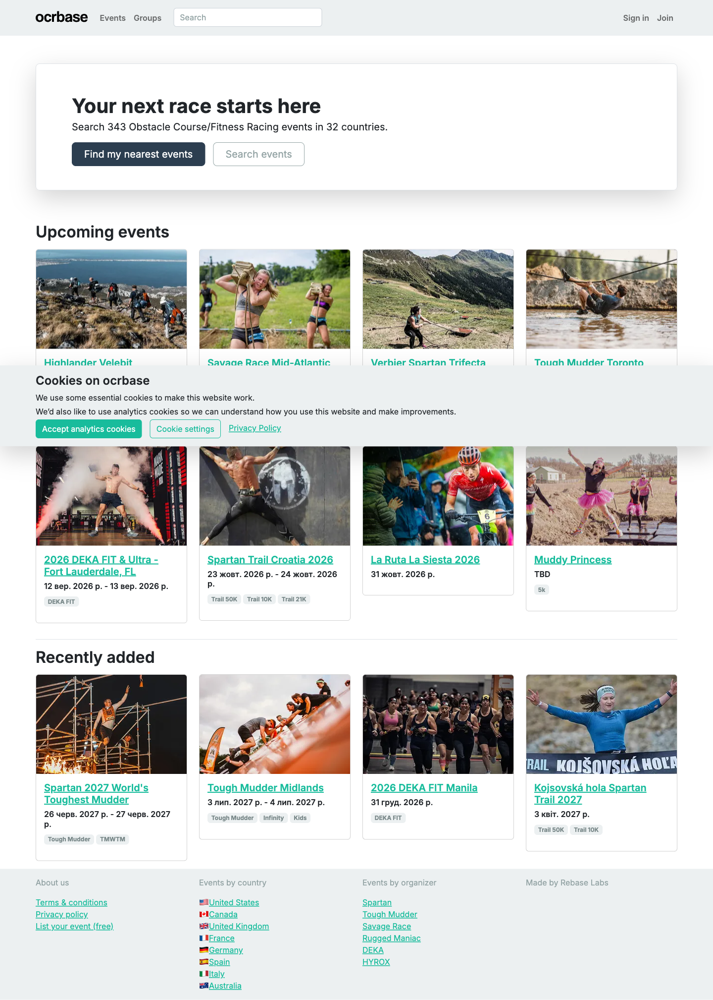
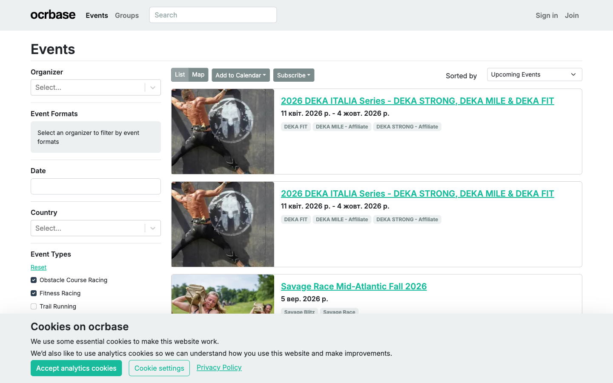
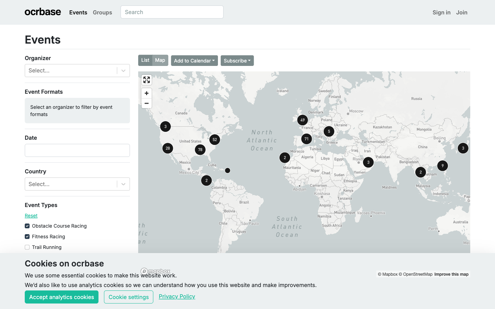
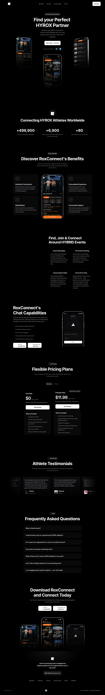
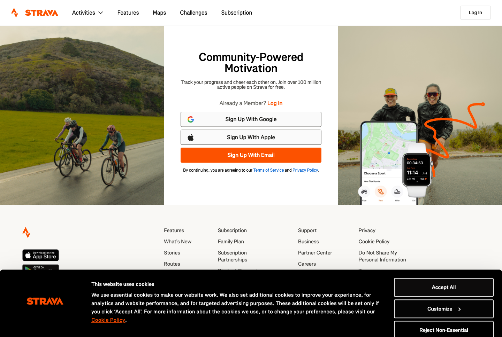
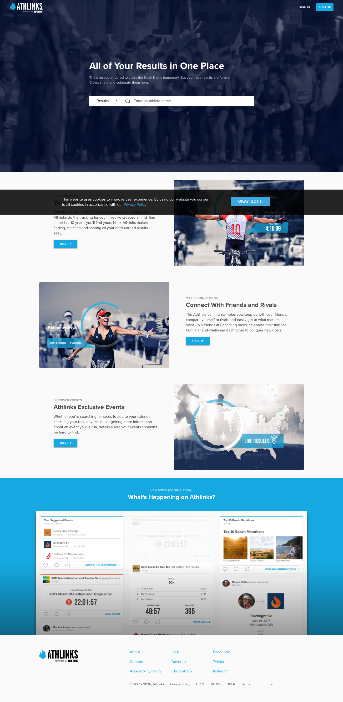
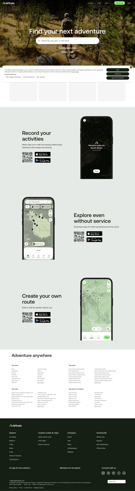
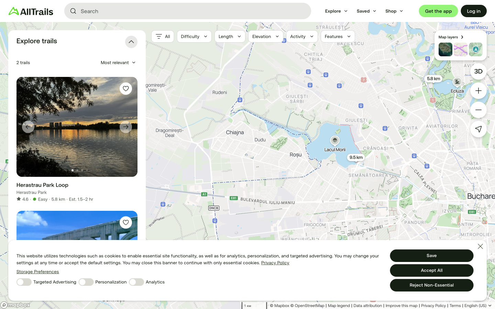

Competitive landscape
Comparison matrix and market-pattern findings for the 5 competitors selected for closer review (2026-09-02): ocrbase.com, RoxConnect, Strava (Events tab), Athlinks, and AllTrails — spanning three competitive tiers: HARD (same product/audience), SOFT (same task, different audience), ASPIRATIONAL (international benchmark).
Comparison matrix
| Axis | ocrbase.com | RoxConnect | Strava (Events tab) | Athlinks | AllTrails |
|---|---|---|---|---|---|
| Audience | OCR / functional-fitness / trail / rucking racers broadly — hybrid-adjacent, not hybrid-branded | HYROX-specific hybrid athletes, beginner→elite, claims “+80 countries” (confirmed on-page stat) | Strava’s existing broad run/cycling base, now shown races via the Events tab | Competitive endurance athletes broadly (running / tri / swim / cycling / adventure racing) | Outdoor enthusiasts (hiking / camping / trail running), broad skill range |
| Product foundation | Free web calendar, footer-credited “Made by Rebase Labs” | Native mobile app (iOS / Android) — store badges shown on homepage | Mature social fitness platform (web+app); races live under Groups → Events | Web results database; footer links to “Life Time” and “ChronoTrack” | Web + mobile app; map-first trail directory |
| Key mechanism | Browse / filter races by format, date, country — map or list view | Create profile → filter / match with training partners → in-app chat | Search + faceted filters (Sport / Dates / Distance / Location / Elevation / Terrain) + a “Popular Races For You” personalized rail | Search / claim your name or bib in race results → build a personal race history | Search by location / filters → trail detail → record / save an activity |
| Trust model | None visible — listings read as self / community-submitted, no verification UI observed | Minimal — self-reported profile data, no verification UI observed | Race listings sourced from Runna, not self-reported; activity data is the athlete’s own GPS-tracked activity | Results reportedly auto-matched from official timing feeds — mechanism specifics | Community reviews + crowdsourced trail data; no personal-result verification concept observed |
| Monetization | No pricing / paid-tier UI observed anywhere on the site | Freemium: Free vs. ~$11.99/mo Premium (confirmed on-page pricing table) | Free Events tab observed; a paid tier reportedly gates training-analysis features — price point | Free to athletes; B2B link to ChronoTrack observed in footer | Freemium positioning stated publicly — gated features / price |
| Sources | ocrbase.com screens/ocrbase.md |
roxconnect.com screens/roxconnect.md |
screens/strava-events.md (logged-in screenshots) |
athlinks.com screens/athlinks.md |
alltrails.com screens/alltrails.md |
Three shared market patterns
Three differences
Screenshots
ocrbase.com



RoxConnect

Strava — Events tab



Athlinks

AllTrails


Ownership-credibility benchmark
Which lightweight mechanisms should Onrace’s MVP borrow to make self-reported result ownership credible, given there’s no manual verification team? Benchmarked against 5 products that handle self-reported/unverified ownership claims well in their own niche, scored 1–5 on 8 criteria.
| Criterion | Goodreads | Letterboxd | Strava (manual entry) | LinkedIn certifications | Chess.com FIDE field |
|---|---|---|---|---|---|
| Identity persistence | 3 | 3 | 4 | 5 | 3 |
| Falsification cost | 1 | 1 | 2 | 2 | 1 |
| Independent cross-reference | 1 | 1 | 1 | 3 | 5 |
| Peer/social visibility | 2 | 3 | 4 | 4 | 3 |
| Automatable plausibility checks | 1 | 1 | 3 | 2 | 1 |
| Stakes-appropriate rigor | 5 | 5 | 5 | 2 | 4 |
| Dispute/correction mechanism | 2 | 2 | 3 | 2 | 2 |
| Source-artifact requirement | 1 | 1 | 1 | 3 | 2 |
| Total (/40) | 16 | 17 | 23 | 23 | 21 |
Sources: Goodreads Reading Challenge · Letterboxd diary feature · Letterboxd FAQ · Strava Help: Virtual Trainer Activities · Strava Help: Segment Leaderboard Guidelines · How to add certifications on LinkedIn · Chess.com forum: FIDE ratings verification
Top 3 mechanisms for Onrace’s MVP
One mechanism that won’t work
Race-discovery interaction pattern
Chosen pattern: map-first spatial exploration, with faceted filtering (region, date, sport type) layered on top as its companion, not a separate feature.
This isn’t a speculative pick — it’s already decided in CLAUDE.md: MVP feature 1 reads “Interactive map of races — filterable by region, date, and sport type,” and the tech stack section has already locked in Leaflet + OpenStreetMap as the map layer.
Why it fits
Open gaps & hypotheses
For each open gap surfaced by the analysis above, a hypothesis and the section it follows from. None of these are validated with real user/usage data yet.
Gap — Will a required link cause submission drop-off?
Hypothesis — Friction will be measurable but survivable: the audience already produces official result links for other purposes (e.g. Boston Marathon qualifying-time proof), so the extra step is small relative to existing motivation — but net effect is likely fewer results logged per user, not zero adoption.
Follows from: CompetitorsGap — Onrace’s brief states no monetization plan, unlike every funded HYROX-specific competitor found.
Hypothesis — “No monetization” is workable through MVP validation but not indefinitely — if revenue is needed later, the two structures every funded competitor actually uses (consumer subscription, or B2B/organizer-subsidy) are the realistic options, not a novel third model.
Follows from: CompetitorsGap — Would that turn a SOFT competitor into a HARD one?
Hypothesis — Low probability inside Onrace’s 2026-11-01 MVP window — every race sampled in the logged-in screenshots was running-only, and expansion would need a new data partnership, not just a UI change. Data not confirmed beyond this one screenshot pass — worth a periodic recheck, not a blocking risk.
Follows from: CompetitorsGap — Is automatable plausibility-checking a sufficient substitute for the ruled-out peer-visibility mechanism?
Hypothesis — Sufficient to catch crude fabrications (impossible times, dead links, exact duplicates) but not a real-but-mismatched link — an acceptable residual risk given Onrace’s trust model is explicitly “the link is the evidence,” not “Onrace verifies.” A known, deliberate limit, not a hidden gap.
Follows from: BenchmarkGap — List/Map toggle vs. AllTrails-style split-pane, and no clustering plan for catalog growth.
Hypothesis — Toggle-first (ocrbase’s pattern) is the right MVP choice given the 2-month timeline and small seed catalog, with split-pane and clustering deferred to a v2 once real usage — not assumption — shows whether users hit that friction. Data not confirmed against Onrace’s actual eventual catalog size.
Follows from: Patterns